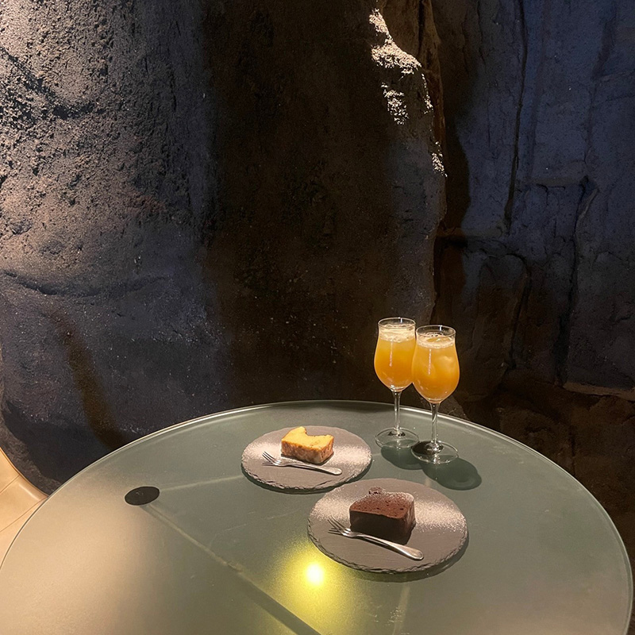
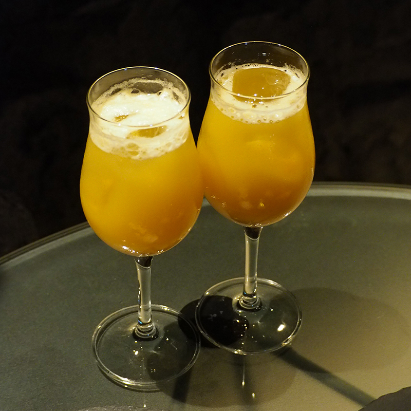
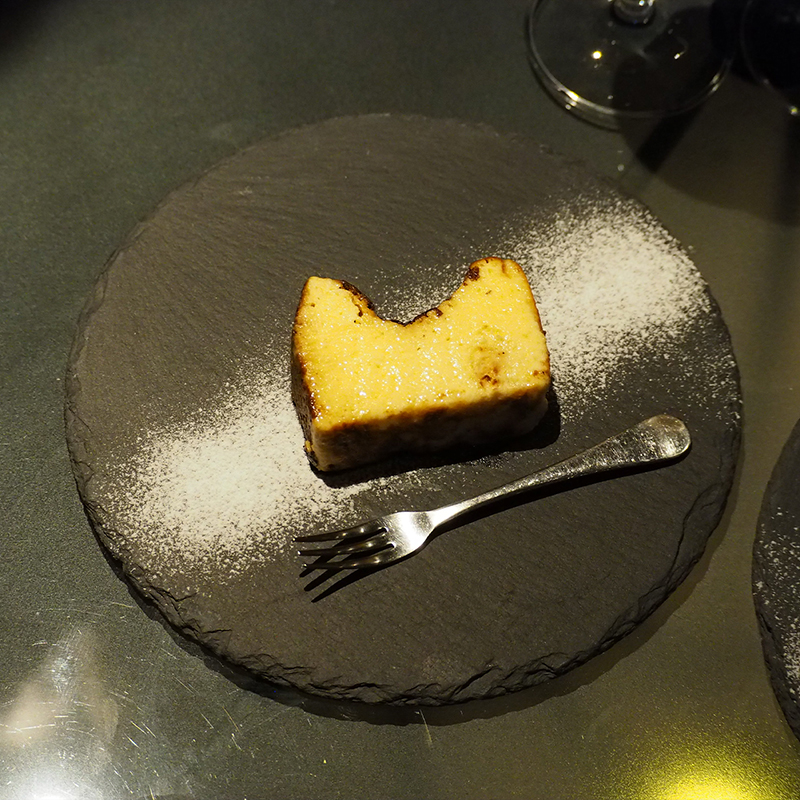

Keno
扉の外側と、海底洞窟のような神秘的な空間へ
西通りから紺屋町東通りに入ってすぐ。知らずに前を通り過ぎている方も多いのでは？
福岡市中央区の大名にある「keno（キノ）」は、岩のような壁で囲まれた薄暗いカフェが特徴のカフェ。
まるで店内を洞窟探検している気分が味わえます。
おすすめは、レモンの香りが爽やかな「チーズケーキ」（600円）。なめらかな口当たりで暑い季節にもぴったりです。夜はバーに大変身！


